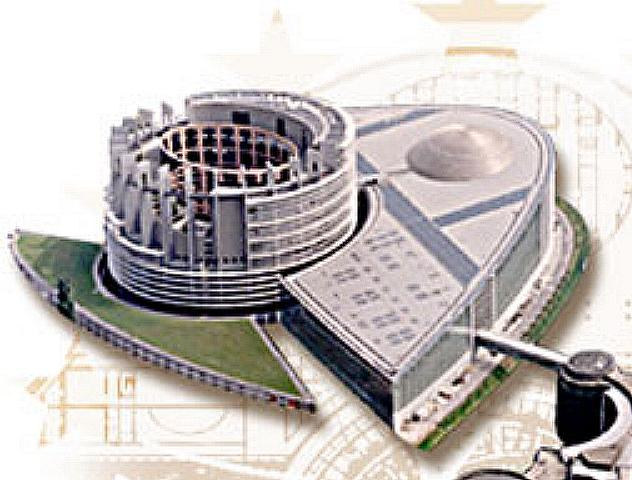
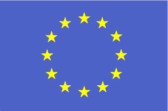
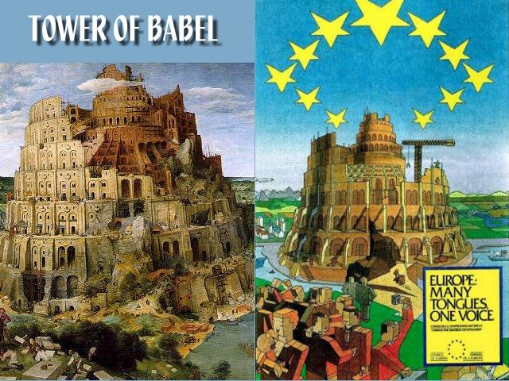
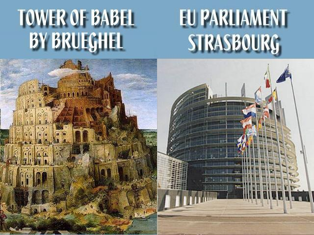
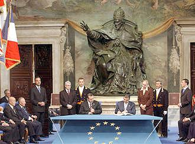

http://biblelight.net
Reversing An Act Of God
With A Modern Tower of Babel
Gen 11:1 And the whole earth was of one language, and of one speech.
Gen 11:2 And it came to pass, as they journeyed from the east, that they found a plain in the land of Shinar; and they dwelt there.
Gen 11:3 And they said one to another, Go to, let us make brick, and burn them thoroughly. And they had brick for stone, and slime had they for mortar.
Gen 11:4 And they said, Go to, let us build us a city and a tower, whose top may reach unto heaven; and let us make us a name, lest we be scattered abroad upon the face of the whole earth.
Gen 11:5 And the LORD came down to see the city and the tower, which the children of men builded.
Gen 11:6 And the LORD said, Behold, the people is one, and they have all one language; and this they begin to do: and now nothing will be restrained from them, which they have imagined to do.
Gen 11:7 Go to, let us go down, and there confound their language, that they may not understand one another's speech.
Gen 11:8 So the LORD scattered them abroad from thence upon the face of all the earth: and they left off to build the city.
Gen 11:9 Therefore is the name of it called Babel; because the LORD did there confound the language of all the earth: and from thence did the LORD scatter them abroad upon the face of all the earth.An Unfinished Tower
|  |
 The flag of the European Union (EU) |
Above is an illustration of the one of the buildings of the European Parliament in Strasbourg France, the Louise Weiss Building, which includes a tower that appears to be unfinished. Below on the left is a painting done in 1563 of the Tower of Babel, by Pieter Brueghel the Elder, a Flemish Northern Renaissance Painter. Below on the right is a poster produced by the European Union symbolically depicting their mission. It combines the 12 stars of the EU flag with the rebuilding of the tower of Babel with the motto Europe: Many Tongues One Voice. Note also that the stars are shown as inverted pentagrams, an occult symbol for Satan.

The tower of the Louise Weiss Building (shown below), although it looks unfinished, was designed with the expressed purpose of resembling the tower of Babel as depicted in Brueghel's painting!

The European Union Constitution
|  |
Capitoline Hill, Rome, October 29, 2004 - Signing the new EU constitution in the Appartamento dei Conservatori, Sala degli Orazi e Curiazi, before the bronze statue of Pope Innocent X by Alessandro Algardi. |
|
AP photo |
The European Union is clearly saying symbolically that their goal is a defiant reversal of an act of God. The prophecy of Daniel chapter 2 tells us that this end-time attempt at unification will ultimately fail as an unfinished work, that it will soon be replaced by the Kingdom of God.
Dan 2:43 And whereas thou sawest iron mixed with miry clay, they shall mingle themselves with the seed of men: but they shall not cleave one to another, even as iron is not mixed with clay.
Dan 2:44 And in the days of these kings shall the God of heaven set up a kingdom, which shall never be destroyed: and the kingdom shall not be left to other people, but it shall break in pieces and consume all these kingdoms, and it shall stand for ever.The EU expanded from 15 members to 25 in 2004, making a new constitution necessary for practical governing. Before it could come into effect, the EU constitution had to be ratified by all 25 EU member states, either through a referendum or by a parliamentary vote. Nine countries already had done so: Austria, Hungary, Italy, Germany, Greece, Lithuania, Slovakia, Slovenia and Spain, however, rejection by even a single remaining country would prevent it from taking effect in November of 2006. The "no" vote that derailed the EU constitution happened on May 29th, 2005 in France. The Netherlands also voted "no" on June 1st, 2005 and the United Kingdom announced on June 6th, 2005 that it would not vote on the constitution. For all practical purposes, the EU constitution and its attempt at unity is dead.
As of January 1, 2007, the EU expanded to 27 nations with the addition of Bulgaria and Romania.
The European Union dropped plans for a constitution and decided to amend two existing treaties instead. Signed by the heads of state in Lisbon on December 13th, 2007, it still had be ratified by all 27 member nations to go into effect. Ireland, the only country to put the treaty to a public vote, defeated the Lisbon treaty proposition on June 12th, 2008.
In September of 2009, Czech senators filed a complaint against the treaty in the constitutional courts that delayed Czech signing of the treaty.
Ireland voted again on October 2nd, 2009, approving the Lisbon treaty, and Poland's President signed the Treaty on October 10th, leaving only the Czech republic's president to approve it, who has said he will not sign the treaty unless his country is granted an opt-out from the EU's Charter of Fundamental Rights.
On November 3rd, 2009, Czech president Vaclav Klaus signed the Lisbon Treaty, after the complaint to the constitutional courts was rejected. The Treaty became law on December 1st.
Belgian Prime Minister Herman Van Rompuy, chosen unanimously by the 27 European heads of government over dinner on November 19th to become EU President, is a devout Roman Catholic who was educated at the Jesuit Sint-Jan Berchmans College in central Brussels, and has degrees in philosophy and applied economics from the Catholic University of Leuven. This brings to mind:
Rev 17:12 And the ten horns which thou sawest are ten kings, which have received no kingdom as yet; but receive power as kings one hour with the beast.
Rev 17:13 These have one mind, and shall give their power and strength unto the beast.
25 May 2014: Eurosceptic 'earthquake' rocks EU elections
|
http://biblelight.net |